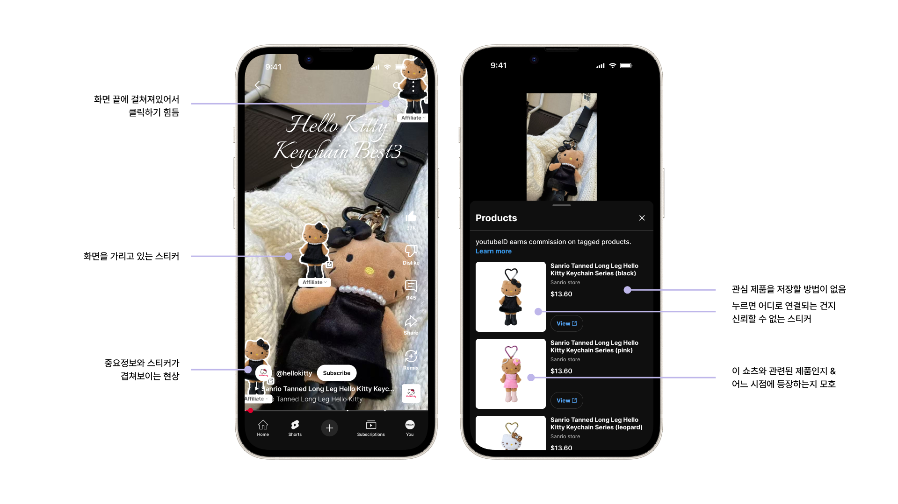
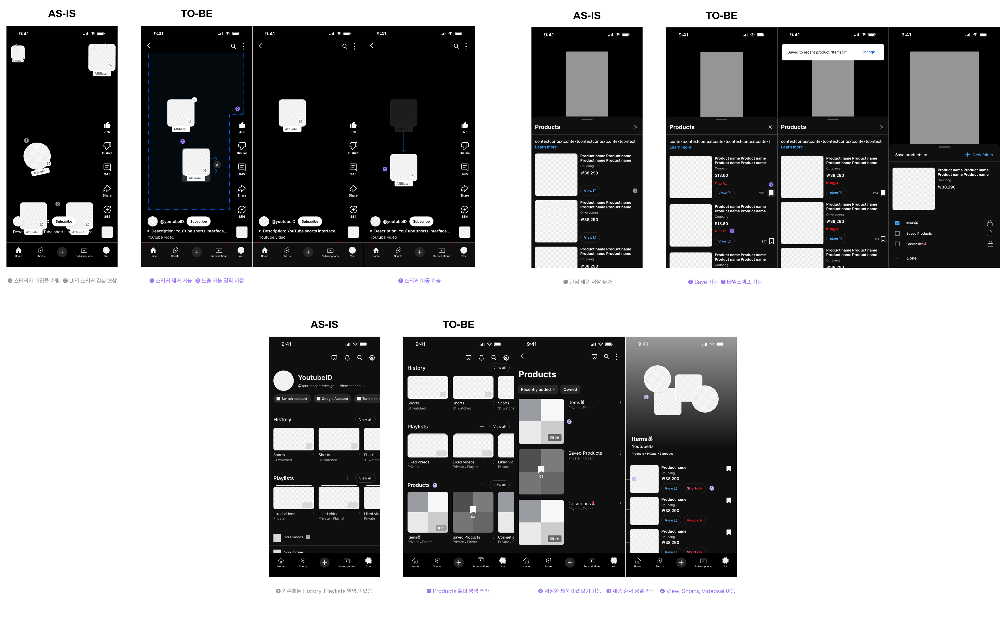
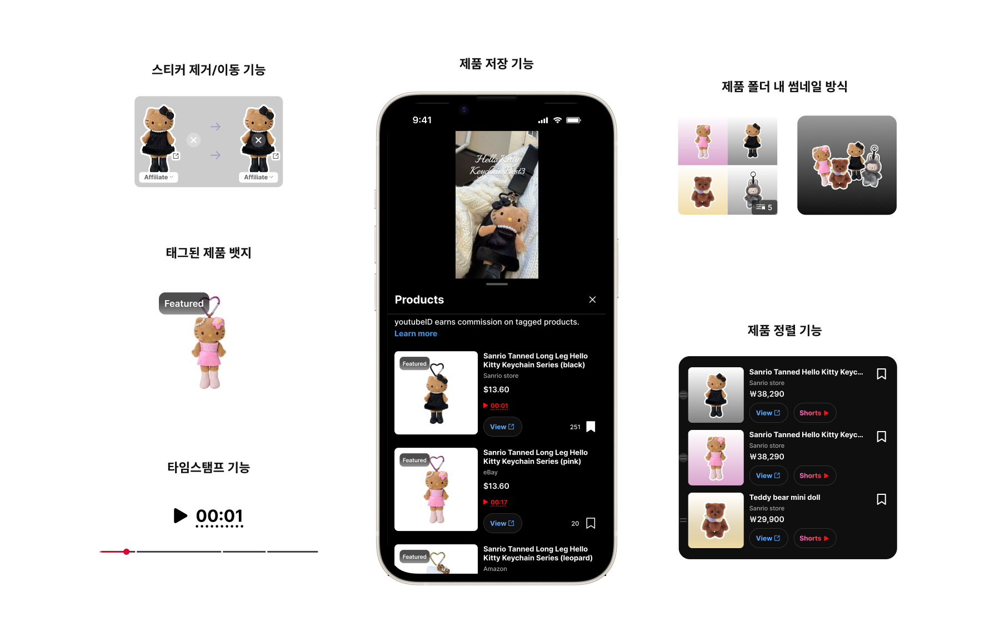
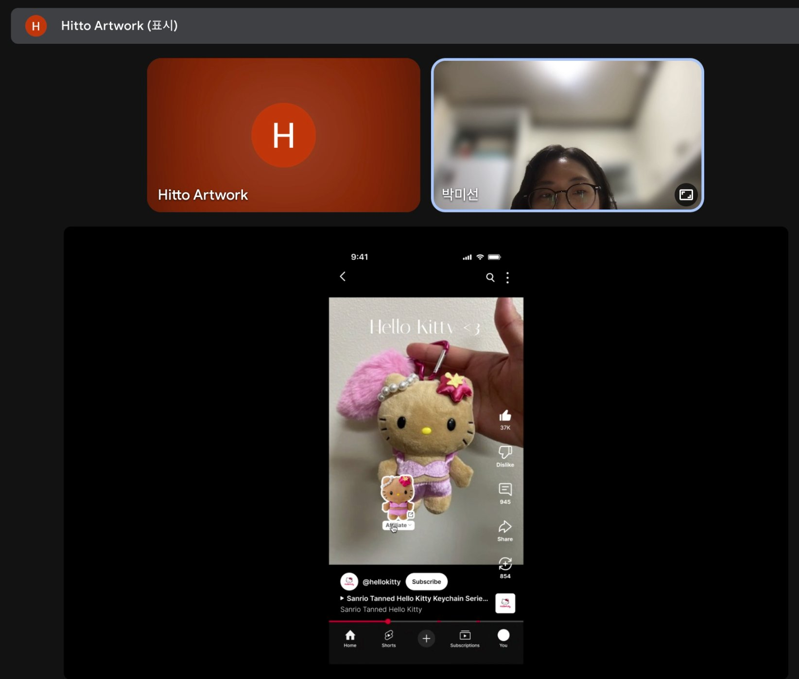
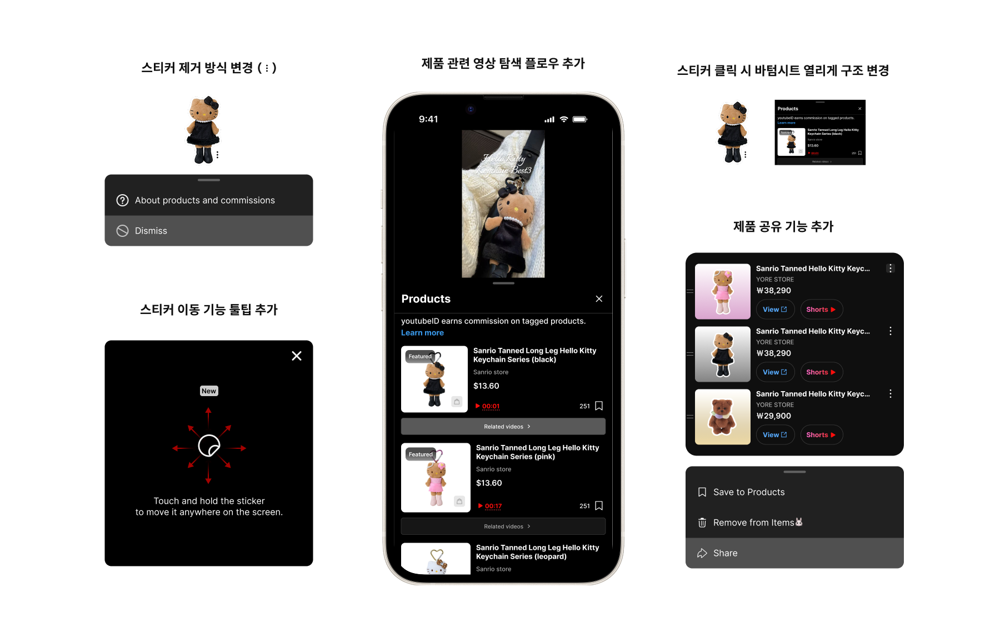

YouTube Redesign Challenge · Team · Sep–Oct 2025
YouTube Shorts Shopping Experience 시청 흐름을 방해하지 않는 쇼핑 경험 설계

I led design & research
Prototyping, Testing
Problem
무엇이 문제인가?
YouTube Shorts를 사용하면서 직접 느꼈던 불편함에서 출발했습니다. 제품 스티커가 시청을 방해하고, 관심 있는 제품을 저장할 방법이 없다는 점에 주목했습니다.

"쇼츠 보는데 스티커가 화면을 방해해요"
시청을 방해하는 스티커
쇼핑 스티커가 화면 위에 고정 배치되어 영상을 가려요. 위치를 옮기거나 제거할 수 없어요.
"이 제품이 영상 어디서 나왔는지 모르겠어요"
맥락이 끊긴 제품 정보
제품이 영상의 어느 장면에서 등장하는지 확인할 수 없어 신뢰도가 떨어져요.
"관심 제품을 저장할 방법이 없어요"
저장 경로의 부재
관심 제품을 따로 저장하는 기능이 없어 나중에 다시 찾으려면 영상을 직접 검색해야 해요.
Design & Research Process
어떻게 접근했나
—
—
—
Prototype
프로토타입 설계
UX 전략 단계에서 정의한 핵심 기능을 바탕으로 Lo-fi 와이어프레임을 빠르게 제작하고, Figma 프로토타입으로 발전시켜 사용성 테스트에 직접 활용했습니다.
Low-Fidelity


01.스티커 제거/이동 기능 ▼
02.태그된 제품 뱃지 ▼
03.타임스탬프 기능 ▼
04.제품 저장 ▼
05.제품 폴더 내 썸네일 방식 ▼
06.제품 정렬 기능 ▼
Usability Testing
실제 사용자와 함께한 테스트
Google Meet를 통해 8명의 참가자와 원격으로 1:1 사용성 테스트를 진행했습니다. 참가자가 위에서 설계한 Figma 프로토타입을 직접 조작하는 동안 Think-Aloud 방식으로 생각을 소리 내어 말하도록 유도했습니다.

Remote UT Session
UT Prototype
Task Performance Metrics
개별 태스크 성과 분석
7개 태스크에 대해 각 참가자의 완료율과 소요 시간을 측정했습니다.
상세 데이터 보기 — Task Success Rate & Time on Task ▼
| 그룹 | 완료수 / 시도수 | 완료율 |
|---|---|---|
| A1 | 5/6 | 71.4% |
| A2 | 5/7 | 71.4% |
| A3 | 7/7 | 100% |
| A4 | 7/7 | 100% |
| B1 | 6/7 | 85.7% |
| B2 | 6/7 | 85.7% |
| B3 | 7/7 | 100% |
| B4 | 5/7 | 71.4% |
| 참가자 | 스티커게재 | 스티커이동 | 배경설정 | 제품저장 | 타임스탬프 | 자동안제거 | 순서변경 |
|---|---|---|---|---|---|---|---|
| A1 | 31s | 3s | 1s | 2m 30s | 2s | 17s | 3s |
| A2 | 8s | 2s | 1s | 47s | 1s | 4s | 5s |
| A3 | 1s | 1s | 2s | 27s | 1s | 4s | 1s |
| A4 | 4s | 2s | 3s | 1m 5s | 3s | 10s | 19s |
| B1 | 35s | 4s | 7s | 2m 53s | 16s | 57s | 30s |
| B2 | 45s | 3s | 3s | 50s | 3s | 40s | 30s |
| B3 | 15s | 3s | 5s | 40s | 10s | 25s | 30s |
| B4 | 4s | 1s | 2s | 25s | 1s | 5s | 2s |
짙은 색 = 빠른 완료, 빨간색 = 지연
SUS Results
시스템 사용성 점수 (SUS)
테스트 완료 후 표준 SUS(System Usability Scale) 10문항 설문을 진행했습니다. 참가자 8명의 응답을 SUS 공식으로 환산한 결과 67.5점을 기록했습니다.
최악 25
Poor 50
Marginal 67.5
OK ← 75
Good 100
최고
SUS 결과는 현재 프로토타입이 수용 가능한 사용성 수준에 도달했음을 보여줍니다. 특히 자신감(Q9)과 학습 용이성(Q10)에서 높은 점수를 기록했으며, 복잡성(Q2)과 지속 사용 의향(Q1) 항목이 최종 이터레이션의 핵심 개선 방향이 됐습니다.
상세 데이터 보기 — SUS 10문항 ▼
Affinity Mapping
사용자 피드백 구조화
8명의 인터뷰와 태스크 테스트에서 수집된 발화 데이터를 어피니티 매핑으로 구조화했습니다. 유사한 패턴끼리 그룹핑해 주요 Pain Point와 사용자 니즈를 범주화했습니다.

Affinity Diagram — Grouping 8 participants feedback into themes
Key Insights
리서치에서 발견한 것들
UT Result
UT 결과 반영

01.스티커 제거 방식 변경 ▼
02.스티커 이동 기능 툴팁 추가 ▼
03.제품 관련 영상 탐색 플로우 추가 ▼
04.스티커 클릭 시 바텀시트 열리게 구조 변경 ▼
05.제품 공유 기능 추가 ▼
Design Solution
최종 디자인
Final Hi-fi Prototype — Interactive flow

Final Hi-fi Design — Task flows
Reflection
배운 것과 다음에 할 것
배운 점
리서치가 실제로 설계 결정을 바꾸는 장면을 직접 경험했습니다. 스티커 dismiss 방식이 드래그에서 ⋮ 메뉴로 바뀐 것, 바텀시트가 기본 진입 경로로 변경된 것 모두 UT 데이터 없이는 내리기 어려운 결정이었습니다. 리서치가 디자인의 방향을 바꿀 수 있다는 걸 수치와 행동 데이터로 확인한 프로젝트였습니다.
프로토콜 개선
UT 진행 중 일부 질문이 사용자의 행동을 유도하고 있다는 것을 발견하고 즉시 표현을 수정했습니다. 이 경험을 바탕으로 이후 프로젝트에서는 프로토콜 검토 단계에 '유도 여부 체크' 항목을 추가해 인터뷰 전 팀 내 리뷰를 거치는 방식으로 프로세스를 구체화했습니다.
향후 개선 방향
전 과정을 폭넓게 다루다 보니 특정 포인트를 더 깊이 파고드는 데 한계가 있었습니다. 다음에는 리마인드 기능이나 Shorts 썸네일에서 제품 스티커 유무를 미리 확인할 수 있는 기능 등 더 고도화된 경험까지 설계해보고 싶습니다.
아쉬운 점
프로젝트 진행 당시 제품 스티커 기능이 한국에 출시된 지 얼마 되지 않은 시점이라 기능을 인지하고 있는 참가자를 모집하는 것 자체가 쉽지 않았습니다. 지금 시점이었다면 기능에 더 익숙한 사용자들로부터 더 풍부한 인사이트를 얻을 수 있었을 것 같습니다.
Next Case

NOM · Product Design · 2026